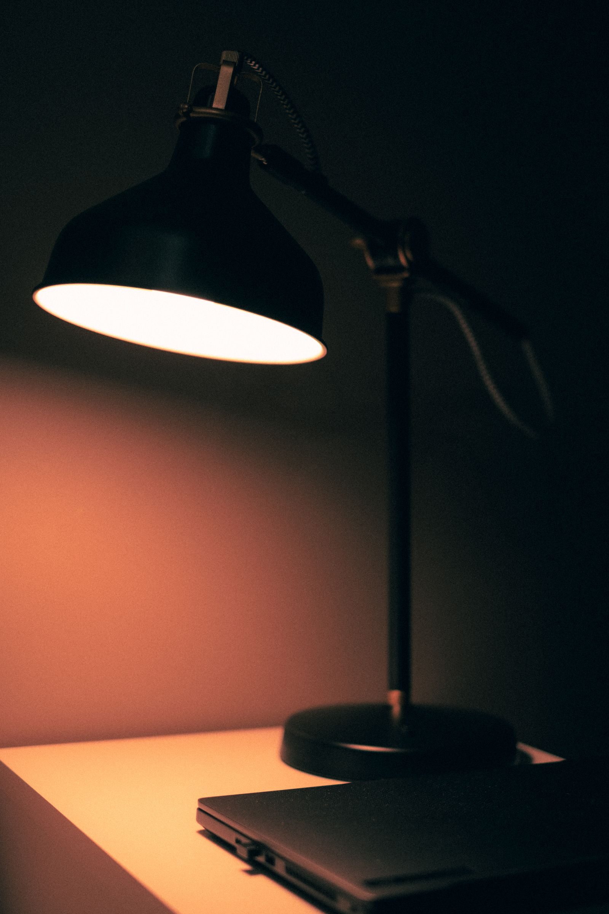
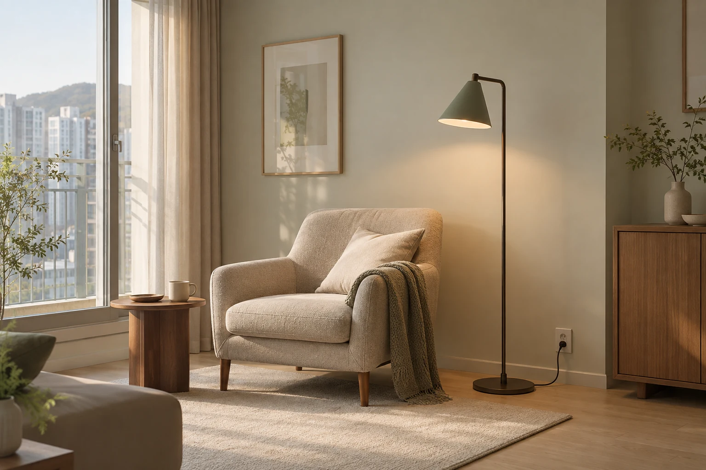

공간별 조명
어느 자리에 놓을 조명인가요?
앉아 읽는 자리, 식사하는 자리, 잠들기 전의 자리. 쓰임에 맞춰 빛과 기구의 위치를 살펴봅니다.

보조 조명
거실의 읽는 자리
소파나 의자에 앉아 읽는 자리를 먼저 정합니다. 천장등과 보조등의 조합, 앉은 위치의 눈부심을 함께 살펴보세요.
- 확인할 자리
- 의자와 조명, 전원 사이의 거리
- 살펴볼 조건
- 앉는 위치의 눈부심과 통로
선택 조건
밝기와 전원,
설치할 자리까지.
쓰는 시간과 자연광
낮과 저녁에 같은 자리를 살펴보세요. 창으로 들어오는 빛과 주로 하는 활동이 조명을 고르는 단서가 됩니다.
밝기와 눈부심
앉거나 서는 위치에서 광원이 직접 보이는지 살펴보세요. 실제 밝기와 빛이 퍼지는 방향은 제품 사양과 현장 조건으로 확인합니다.
전원과 조작
콘센트가 있는 자리와 스위치까지의 거리를 살펴봅니다. 선이 지나갈 곳과 자주 오가는 통로도 함께 생각하세요.
교체와 설치 조건
제품의 설치 방식과 교체, 관리 방법을 확인합니다. 배선 작업과 설치 가능 여부는 실제 전문가가 현장에서 판단해야 합니다.
질문과 답변
선택 전에 궁금한 점
조명은 몇 개나 필요한가요?
공간의 크기만으로 정하기 어렵습니다. 사용하는 시간과 활동, 자연광, 기존 조명과 천장 구조를 함께 확인합니다.
기존 조명을 모두 바꿔야 하나요?
기존 조명을 유지하면서 위치나 조합을 조정하는 방식도 검토할 수 있습니다. 현재 상태와 필요한 변경 범위를 먼저 살펴보세요.
사진처럼 설치하면 같은 빛이 나오나요?
사진은 조명의 위치를 보여주는 연출 예시입니다. 실제 밝기와 배광, 색은 제품과 공간 조건에 따라 달라지므로 실제 사양과 설치 조건으로 확인해야 합니다.
상담 준비
빛이 필요한 자리를
사진으로 남겨 주세요.
낮과 저녁의 사진, 사용하는 시간과 지금 불편한 점을 함께 남겨 주세요. 원하시는 변화와 설치 조건을 이야기하는 출발점입니다.
- 안내 시간
- 평일 10:00–18:00
토요일 10:00–14:00
일요일, 공휴일 휴무 - 주소
- 서울특별시 서초구 온빛로 72, 4층
표시용 가상 주소
지도 표시 예시 보기
강남역 일대의 지도 예시입니다. 가상 주소의 실제 위치가 아닙니다.